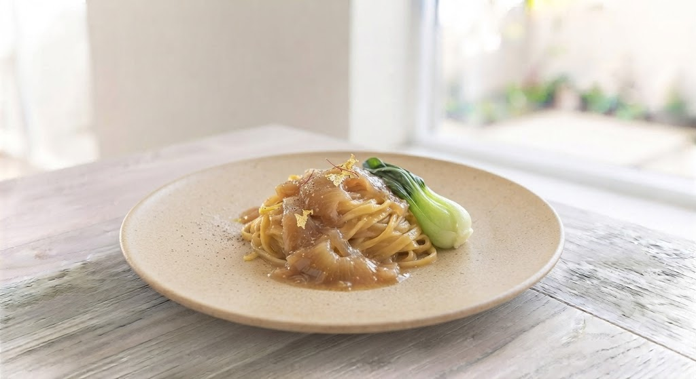
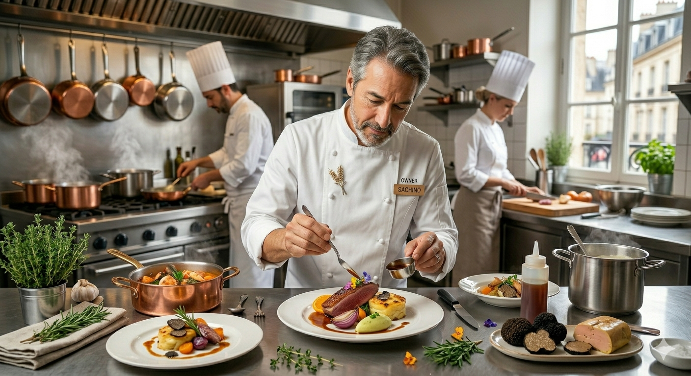

【WEB予約特典】ウェルカムドリンク進呈中
空席を確認
看板メニュー「フカヒレのパスタ」。
気仙沼産の上質なフカヒレを、シェフ独自の技法で旨味の極限まで引き出しました。
熟成させたソースが麺に絡み、一口ごとに広がるのは、他では決して味わえない贅沢な余韻。
多くの食通に愛され続ける、常春の象徴です。
オーナーシェフ、澤飯 和広。20歳で上京し、美食の激戦区・銀座の【イル・ピノーロ】で6年間料理長を務める。 高級店で磨き上げたのは、素材の声を紡ぐ力と、完璧な火入れの技術。
「真の地産地消とは何か」を問い直し、2014年に札幌へ帰還。 北海道の旬食材を、銀座仕込みの真空調理や熟成技法で昇華させる。 その繊細かつ大胆な一皿は、10年の歳月を経て、今や札幌を代表するイタリアンの一つとなりました。

Q&A and Voice
記念日での利用ですが、サプライズは可能ですか？
はい。メッセージプレートのご用意など承っております。ご予約時に詳細をお聞かせください。
「こだわりの料理にペアリングのワインがマッチして、素晴らしい。気の置けない仲間と最高に良い時間を過ごせた。内装も落ち着いていて、隠れ家そのもの。」
常春での感動的な一夜を、もっと深く、ずっと身近に。
お召し上がりいただいたお料理、ソムリエ厳選ペアリングワイン、そして北海道の食材生産者様のストーリーを詰め込んだ「デジタルカード」をスマホに配布する新サービスを企画しております。
今夜味わったワインのマリアージュや、熟成料理の技法、契約農家様の情熱をデジタルカードでいつでも読み返せます。
集めたカードのコレクションに応じて、次回ご来店時に楽しめる「裏メニューペアリング」や「特別なご案内」が届きます。
「このワインと料理が最高だった」という思い出のカードをSNSやLINEで手軽に共有。大切な方への美味しい口コミの輪が広がります。
「乾杯のウェルカムドリンク」を1杯サービスいたします。
※少人数制のためお早めのご予約をお勧めいたします。
今すぐ空席を予約する